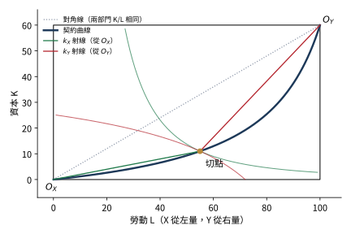
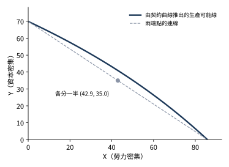
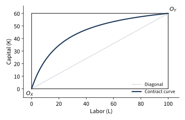
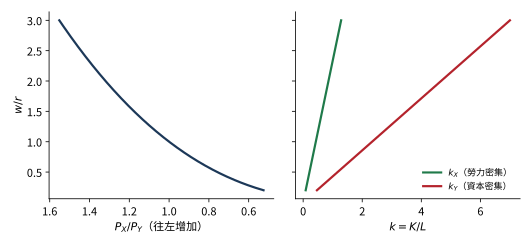
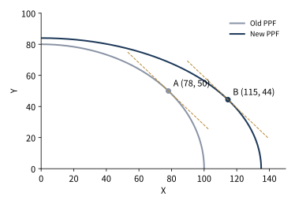

首頁 › 課程筆記 › 第 4 章 這一章在問什麼 ：如果兩國的技術完全相同，還會貿易嗎？H–O 模型（Heckscher–Ohlin model）的答案是會，只要兩國的資源秉賦 （factor endowment）比例不同：勞動多的國家做勞動用得多的東西比較便宜，資本多的國家做資本用得多的東西比較便宜。所以它又叫要素比例模型 （factor proportions model）。
為什麼重要 ：H–O 模型推出四大定理，回答四種不同的問題，是期中考比重最大的一章（全卷 14 題）。老師提醒四大定理除了要會敘述結論，也要會畫圖證明、說出背後的經濟機制。
本章的設定 （課本與簡報一致，整章都用這一組）：
本國是勞動豐富 國，外國是資本豐富 國。
X 是勞力密集 財，Y 是資本密集 財。
本章的脈絡 ：
步驟
在做什麼
對應節
1
假設：要隔離哪一種貿易原因；密集與豐富
4.1
2
生產面的工具：固定規模報酬、等產量線、箱型圖、生產可能線
4.2
3
商品價格 → 要素價格 → 資本勞動比，這條鎖鏈貫穿四大定理
4.3
4
雷布津斯基定理：資源變多，產量怎麼變
4.4
5
H–O 定理：資源比例決定出口什麼
4.5
6
斯托爾珀－薩繆爾森定理：商品漲價，要素報酬怎麼變
4.6
7
要素價格均等定理：商品貿易能拉平工資與租金
4.7
8
李昂提夫矛盾，以及全球供應鏈
4.8
先記住四大定理各自在回答什麼，判斷題目該用哪一個：
定理
動的是什麼
預測什麼
雷布津斯基
資源數量（引進外勞、引進外資）
產量
H–O
兩國的資源比例
出口什麼
斯托爾珀－薩繆爾森
商品價格
要素報酬（所得分配）
要素價格均等
自由貿易使商品價格相同
兩國的要素價格
老師上課補充 言必稱赫克歇爾 赫克歇爾（Eli Heckscher）1919 年用瑞典文寫出最原始的版本，讀者有限、幾乎沒人注意；他的學生歐林（Bertil Ohlin）1924 年用英文改寫，模型才為各國學者所知。從 1924 年到 1960 年代中期，這個模型主導國際貿易領域，老師引用當時的說法「言必稱赫克歇爾」。1960 年代很多人認為貿易理論已經到頂，真正的突破是 1970 年代中期把產業經濟學的方法引進來，發展出新貿易理論。
4.1 基本假設：密集與豐富2×2×2 與六個假設
兩國（本國、外國）、兩種商品（X、Y）、兩種要素（資本 K、勞動 L）。
兩國技術相同 ；固定規模報酬；每種要素的邊際報酬遞減；兩國都同時生產兩種商品（不完全專業化）。
兩種商品的要素密集度不同 （資本勞動比不同）。
兩國的要素秉賦不同 ：本國勞動豐富、外國資本豐富。
要素在國內可以自由移動，國際間不能；要素市場與商品市場都完全競爭。
兩國的需求相同且齊序 （identical and homothetic）。
每條假設擋住什麼 ：技術相同擋住李嘉圖的原因；固定規模報酬擋住規模經濟 ；相同偏好擋住需求差異。所有可能的原因都釘成兩國一樣，模型裡若仍出現貿易，就只能歸因於資源秉賦。
即：把其他可能的原因都釘成兩國一樣，剩下會動的那一個就是答案。
為什麼不會完全專業化 ：李嘉圖模型的機會成本 固定，把全部勞動移去生產比較利益 財都划算；這裡每種要素的邊際報酬遞減，越專業化機會成本越高，會停在兩種商品都生產的位置。
要素密集：比商品
要素密集度 （factor intensity）比較的是同一組要素價格下 ，兩種商品使用的資本勞動比 \(k=\frac{K}{L}\)：
\[k_X=\frac{K_X}{L_X}<\frac{K_Y}{L_Y}=k_Y\qquad\Longrightarrow\qquad\text{X 勞力密集、Y 資本密集}\]
成衣相對依賴勞動、汽車相對依賴設備，但兩者都同時用到勞動與設備；講的是「誰比較依賴機器」，不是誰完全不用人。技術相同，所以同一種商品在兩國的要素比例相同：全世界做衣服的配方一樣，做衣服和做汽車的配方不一樣。
要素豐富：比國家
要素豐富 （factor abundance）比較的是兩國的總資本勞動比 ：
\[\frac{K_H}{L_H}<\frac{K_F}{L_F}\qquad\Longrightarrow\qquad\text{本國勞動豐富、外國資本豐富}\]
看比例，不看絕對量 ：甲國 \(K=100\)、\(L=10\)，乙國 \(K=500\)、\(L=100\)。乙國兩種要素都比較多，但甲國的 \(\frac{K}{L}=10\) 大於乙國的 5，甲國相對資本豐富。
老師上課補充 臺灣是資本豐富還是勞動豐富 老師用臺灣與中國大陸示範：中國大陸的勞動比臺灣多、資金也比臺灣多，用絕對數字比不出結論。改比每位工人配備的機器數量，臺灣高於中國大陸，所以相對於中國大陸，臺灣是資本豐富國；但相對於美國、日本與歐洲，臺灣是勞動豐富國。密集度也一樣：加入第三種商品 Z，Y 相對 X 是資本密集，相對 Z 卻可能是勞力密集。密集和豐富都是排序裡的位置，換了比較對象就要重新判定。
Concept Check：4.1 基本假設：密集與豐富 題目依本節內容自編，仿期中考的英文選擇題、讀圖題與計算題，不是老師出的題目。
Country A has K = 200 and L = 50. Country B has K = 600 and L = 300. Which statement is correct?
(A) A is capital abundant because its K/L ratio is higher (B) A is labor abundant because it has fewer workers than B (C) B is capital abundant because it has more capital than A (D) Neither can be classified because both factors differ 顯示解答 中文題意
A 國 K＝200、L＝50；B 國 K＝600、L＝300。哪一個敘述正確？
答案 (A) A is capital abundant because its K/L ratio is higher
解析
\[\frac{K_A}{L_A}=\frac{200}{50}=4,\qquad \frac{K_B}{L_B}=\frac{600}{300}=2\]
A 的資本勞動比比較高，A 相對資本豐富、B 相對勞動豐富。
(A) 正確。
(B) 錯。勞動比較少不代表勞動豐富，A 的勞動相對於資本是稀少的。
(C) 錯。B 的資本絕對量比較多，但豐富看的是比例。
(D) 錯。兩種要素都不同時，正是要用比例判斷。
即：豐富看 K/L，不看誰的數字大。
易錯提醒
期中考第 20 題的數字（本國 240／120、外國 180／180）就是用這個方法判斷。
Why does the basic H–O model assume that both countries have identical technologies and identical homothetic preferences?
(A) To isolate factor endowments as the only cause of trade (B) To guarantee that both countries specialize completely in one good (C) To ensure that factor prices differ permanently after trade opens (D) To allow capital and labor to move freely across countries 顯示解答 中文題意
基本的 H–O 模型為什麼假設兩國技術相同、偏好相同且齊序？
答案 (A) To isolate factor endowments as the only cause of trade
解析
技術相同擋住李嘉圖的貿易原因，偏好相同擋住需求差異的原因，固定規模報酬擋住規模經濟。其他原因都排除後，模型裡出現的貿易只能歸因於資源秉賦。
(A) 正確。
(B) 錯。H–O 模型的兩國都生產兩種商品，不會完全專業化。
(C) 錯。剛好相反，要素價格均等定理說貿易會讓要素價格相同。
(D) 錯。要素不能跨國移動也是假設之一。
即：想證明哪一項是原因，就要把其他可能的原因都釘住。
易錯提醒
期中考第 27 題的「isolate the effects of factor endowments」就是在問這件事。
4.2 生產面的工具：固定規模報酬、等產量線、箱型圖固定規模報酬：邊際生產力只看 K/L
用柯布－道格拉斯生產函數 （Cobb–Douglas production function）示範，A 是技術、\(\alpha\) 是資本的產出彈性：
\[Q=AK^{\alpha}L^{1-\alpha},\qquad 0<\alpha<1\]
第 1 步 固定規模報酬。 兩種投入同乘 \(t\)，把 \(t\) 的指數相加：
\[F(tK,tL)=A(tK)^{\alpha}(tL)^{1-\alpha}=t^{\alpha+(1-\alpha)}AK^{\alpha}L^{1-\alpha}=tQ\]
指數加起來剛好是 1，產量就剛好是 \(t\) 倍。一般形式 \(Q=AK^{\alpha}L^{\beta}\)：\(\alpha+\beta=1\) 固定、\(>1\) 遞增、\(<1\) 遞減。
第 2 步 勞動的邊際生產力 。 固定 K，對 L 偏微分（指數移到前面、原指數減一），再把 L 的負指數移到分母：
\[MPL=\frac{\partial Q}{\partial L}=A(1-\alpha)K^{\alpha}L^{-\alpha}=A(1-\alpha)\left(\frac{K}{L}\right)^{\alpha}\]
第 3 步 資本的邊際生產力。 同樣做法：
\[MPK=\frac{\partial Q}{\partial K}=A\alpha K^{\alpha-1}L^{1-\alpha}=A\alpha\left(\frac{K}{L}\right)^{\alpha-1}\]
結論 ：MPL、MPK 只是 \(\frac{K}{L}\) 的函數 。\(K=100\)、\(L=50\) 和 \(K=500\)、\(L=250\) 的 \(k\) 都是 2，邊際生產力完全相同。這個性質後面推要素價格均等時一定會用到。
即：只要「每個工人配幾臺機器」沒變，多一個人能多做多少就沒變，不管工廠是大是小。
等產量線、等成本線與擴張路徑
等產量線 （isoquant）：產量相同的 (L, K) 組合。10 個工人配 10 臺機器做 100 件衣服；多給 10 個工人，可以少用一些機器仍做 100 件。
等成本線 （isocost line）：總成本 \(C\) 相同的組合。
\[C=wL+rK\quad\Longrightarrow\quad K=\frac{C}{r}-\frac{w}{r}L\]
斜率 \(-\frac{w}{r}\)：多雇一個人要花 \(w\)，錢不變就要少買 \(\frac{w}{r}\) 單位資本。兩軸截距是 \(\frac{C}{w}\)、\(\frac{C}{r}\)。
成本最小 ：等成本線與等產量線相切，\(\frac{MPL}{MPK}=\frac{w}{r}\)。代入柯布－道格拉斯：
\[\frac{MPL}{MPK}=\frac{1-\alpha}{\alpha}\cdot\frac{K}{L}=\frac{w}{r}\quad\Longrightarrow\quad k=\frac{K}{L}=\frac{\alpha}{1-\alpha}\cdot\frac{w}{r}\]
勞動相對變貴（\(\frac{w}{r}\) 上升），廠商讓每位工人配更多資本（\(k\) 上升）。固定 \(\frac{w}{r}\) 擴產時，切點沿著一條通過原點的射線 移動（射線的斜率就是 \(k\)）。
易錯提醒 軸上放什麼，斜率就是誰的價格比 兩軸是 L 與 K 的圖，斜率讀的是 \(\frac{w}{r}\)；兩軸是 X 與 Y 的圖，斜率讀的才是 \(\frac{P_X}{P_Y}\)。同樣形狀的曲線換了座標軸就換了名字：L、K 是等產量線，X、Y 的消費量是無異曲線。
箱型圖與契約曲線
把兩個部門的圖拼成艾吉沃斯箱型圖 （Edgeworth box）：寬是總勞動 \(\bar L\)、高是總資本 \(\bar K\)，X 從左下原點 \(O_X\) 量，Y 從右上原點 \(O_Y\) 反向量。箱子裡任何一點都把兩種要素分完，自動充分就業。
有效率的配置 ：如果兩條等產量線在某一點相交，還可以重新分配，在不減少 Y 的情況下增加 X；只有相切的點無法再改善。所有切點連起來就是契約曲線 （contract curve）。
契約曲線在對角線下方 ：曲線上任一點，從 \(O_X\) 連過去的射線斜率是 \(k_X\)，從 \(O_Y\) 連過去的是 \(k_Y\)。X 勞力密集（\(k_X<k_Y\)），這個點必須落在對角線下方 。若改設 X 資本密集，曲線就在對角線上方。

箱型圖：L＝100、K＝60，\(X=K^{0.3}L^{0.7}\)（勞力密集）、\(Y=K^{0.7}L^{0.3}\)（資本密集）。契約曲線在對角線下方；切點 (55, 11) 的 \(k_X=0.2\)，\(k_Y=\frac{49}{45}\approx1.09\)。 由契約曲線推出生產可能線
把契約曲線上每一點的 (X, Y) 產量畫到 X、Y 座標上，就是生產可能線。它凹向原點 ，即使是固定規模報酬：
兩個端點：全部資源做 X、或全部做 Y。
資本與勞動各分一半 （對角線的中點）：固定規模報酬下 X、Y 各是最大產量的一半，剛好落在兩端點的連線上。
但對角線上兩條等產量線是相交、不是相切，還能改善：固定 Y 可以多做 X、固定 X 可以多做 Y。改善後的點都在連線外側 。

由契約曲線推出的生產可能線（實線）在兩端點連線（虛線）外側。各分一半的配置只得到 (42.9, 35.0)，落在連線上，不是最有效率的分法。 即：資源各分一半不是最會生產的分法，照「誰比較用得到誰」重新分，兩樣都能比平均分配時多。
Concept Check：4.2 生產面的工具：固定規模報酬、等產量線、箱型圖 題目依本節內容自編，仿期中考的英文選擇題、讀圖題與計算題，不是老師出的題目。
In the Edgeworth box below (X measured from \(O_X\) at the lower left), the contract curve lies above the diagonal. What does this imply?

箱型圖：寬是勞動、高是資本；契約曲線在對角線上方。 (A) X is labor intensive and Y is capital intensive (B) X is capital intensive and Y is labor intensive (C) Both goods use the same capital–labor ratio (D) The allocation is inefficient at every point on the curve 顯示解答 中文題意
下圖的箱型圖中（X 從左下的 \(O_X\) 量），契約曲線在對角線上方。這代表什麼？
答案 (B) X is capital intensive and Y is labor intensive
解析
曲線上任一點，從 \(O_X\) 連過去的射線斜率是 \(k_X\)，從 \(O_Y\) 連過去的是 \(k_Y\)。點在對角線上方時，從左下連過去的射線比對角線陡，從右上連過去的比對角線平，所以 \(k_X>k_Y\)：X 資本密集、Y 勞力密集。
(A) 錯。那是契約曲線在對角線下方的情況（本章課本的設定）。
(B) 正確。
(C) 錯。兩部門 K/L 相同時，契約曲線就是對角線本身。
(D) 錯。契約曲線上的點都是有效率的（等產量線相切）。
即：契約曲線偏向哪一邊，看的是哪一財比較用機器。
易錯提醒
先確認 X 從哪個原點量；原點換邊，判斷就要反過來。
X 的生產函數 \(X=K^{0.25}L^{0.75}\)，Y 的生產函數 \(Y=K^{0.6}L^{0.4}\)。工資 \(w=3\)、資本報酬 \(r=1\)。(1) 兩個產業的最適資本勞動比各是多少？(2) 哪一個是資本密集財？
你的答案 對答案 四捨五入到小數第 1 位，不用打單位與 %
顯示解答 答案 (1) \(k_X=1\)、\(k_Y=4.5\)；(2) Y 是資本密集財
解析
用 \(k=\frac{\alpha}{1-\alpha}\cdot\frac{w}{r}\)：
\[k_X=\frac{0.25}{0.75}\times3=1,\qquad k_Y=\frac{0.6}{0.4}\times3=4.5\]
同一組要素價格下 \(k_Y>k_X\)，Y 是資本密集財。
即：資本的指數越大，廠商每個工人配的機器越多。
易錯提醒
公式來自相切條件 \(\frac{MPL}{MPK}=\frac{w}{r}\)，分子是 \(\alpha\)（資本的指數）。
4.3 商品價格、要素價格與資本勞動比這一節是老師說「最難的部分」，也是四大定理共同的引擎：
\[\frac{P_X}{P_Y}\uparrow\quad\Longrightarrow\quad\frac{w}{r}\uparrow\quad\Longrightarrow\quad k_X\uparrow,\ k_Y\uparrow\]
第 1 段 \(\frac{P_X}{P_Y}\) 上升 → \(\frac{w}{r}\) 上升。 X 變貴，生產點沿契約曲線往 X 擴張：X 增產、Y 減產。X 是勞力密集，擴張需要很多工人、很少機器 ；Y 是資本密集，減產釋出的是很少工人、很多機器 。勞動相對不夠、資本相對過剩，工資上漲、資本報酬下跌，\(\frac{w}{r}\) 上升。
即：擴張的那一邊很缺人，收縮的那一邊放出來的卻多是機器，所以人變貴、機器變便宜。
第 2 段 \(\frac{w}{r}\) 上升 → 兩個產業的 \(k\) 都上升。 勞動變貴，兩個產業都用相對便宜的資本替代勞動，每位工人配的機器變多。老師的例子：同樣的衣服，在工資低的印度大量用工人，在美國走向全自動。在任何一個 \(\frac{w}{r}\) 下，仍然 \(k_X<k_Y\)。

左：商品相對價格與要素價格比同方向（橫軸往左增加）。右：要素價格比上升，兩個產業的資本勞動比都上升，而且同一個 w/r 下 \(k_X<k_Y\)。 易錯提醒 X 多雇了工人，為什麼 X 的 K/L 還上升 總量和比例是兩件事。X 擴大規模，總就業增加；同時工資相對上漲，每位工人配更多資本，\(\frac{K_X}{L_X}\) 也上升。兩個產業的 \(k\) 都上升、總資源又固定，所以靠的是 X 擴張（\(k\) 比較低的產業比重變大）才把整體 K/L 維持住。
老師上課補充 同一點兩條切線平行，不同點之間才有陡平 同學問：兩部門在同一點的切線看起來很像平行，到底平不平行？老師說，在同一個配置點上，兩部門面對同一組工資與利率，兩條切線一定平行，這正是切點的條件。不平行的是不同配置點的切線：沿契約曲線往 X 多的一端走，每一點的共同切線都比前一點更陡，因為 \(\frac{w}{r}\) 一路上升。
Concept Check：4.3 商品價格、要素價格與資本勞動比 題目依本節內容自編，仿期中考的英文選擇題、讀圖題與計算題，不是老師出的題目。
X is labor intensive. The relative price of X rises and both goods are still produced. Which combination is correct?
(A) w/r falls, and both industries become more labor intensive (B) w/r rises, and only industry X raises its K/L ratio (C) w/r falls, and industry Y raises its K/L ratio (D) w/r rises, and both industries raise their K/L ratios 顯示解答 中文題意
X 是勞力密集財。X 的相對價格上升，兩種商品都還在生產。哪一個組合正確？
答案 (D) w/r rises, and both industries raise their K/L ratios
解析
X 擴張需要很多工人、Y 收縮釋出很多資本，勞動相對稀缺，\(\frac{w}{r}\) 上升。勞動變貴，兩個產業都用資本替代勞動，\(k_X\)、\(k_Y\) 都上升。
(A) 錯。\(\frac{w}{r}\) 是上升。
(B) 錯。兩個產業面對同一組要素價格，都會調整。
(C) 錯。
(D) 正確。
即：工人變貴，所有產業都多用機器。
易錯提醒
「兩個產業的 K/L 都上升」和「總資源 K/L 不變」不矛盾：低 K/L 的 X 產業比重變大了。
4.4 雷布津斯基定理定理 （Rybczynski theorem，1955）：在商品價格不變 、兩種商品都生產的情況下，某一要素增加，密集使用該要素 的商品產量增加，另一商品產量減少 。
本章設定下：勞動增加 → X（勞力密集）增產、Y 減產；資本增加 → Y 增產、X 減產。
老師說這個定理受注目，是因為引進外勞（勞動增加）、開放外資（資本增加）都是臺灣實際採行過的政策。
證明：用兩條資源限制
第 1 步 價格不變 → k 不變。 4.3 的鎖鏈：\(\frac{P_X}{P_Y}\) 不變 → \(\frac{w}{r}\) 不變 → \(k_X\)、\(k_Y\) 不變。
第 2 步 寫出兩條充分就業條件。 勞動用完、資本用完；把 \(K_X\) 寫成 \(k_XL_X\)：
\[L_X+L_Y=L,\qquad k_XL_X+k_YL_Y=K\]
第 3 步 解兩部門的就業。 把 \(L_Y=L-L_X\) 代入第二式：
\[L_X=\frac{k_YL-K}{k_Y-k_X},\qquad L_Y=\frac{K-k_XL}{k_Y-k_X}\]
第 4 步 對 L 微分（K 固定）。 \(k_Y>k_X>0\)，分母為正：
\[\frac{dL_X}{dL}=\frac{k_Y}{k_Y-k_X}>1,\qquad \frac{dL_Y}{dL}=-\frac{k_X}{k_Y-k_X}<0\]
X 增加的勞動比新增的勞動還多 ，多出來的部分從 Y 抽過來；Y 同時釋出勞動和資本給 X。固定規模報酬下產量和該部門規模同比例，所以 X 增產、Y 減產。
數字驗算 ：\(k_X=\frac12\)、\(k_Y=2\)，原本 \(L=10\)、\(K=10\)：\(L_X=\frac{20-10}{1.5}=\frac{20}{3}\)、\(L_Y=\frac{10-5}{1.5}=\frac{10}{3}\)。勞動增加到 12：\(L_X=\frac{24-10}{1.5}=\frac{28}{3}\)、\(L_Y=\frac{10-6}{1.5}=\frac{8}{3}\)。X 多用了 \(\frac{8}{3}\) 單位勞動，其中 2 是新增的、\(\frac{2}{3}\) 來自 Y。
即：兩條線的斜率都不准動，箱子變寬以後，交點只能往 X 那邊滑。
箱型圖的讀法 ：勞動增加使箱子變寬；X 的射線沿原方向延長，Y 從移到右邊的新原點畫一條和原射線平行 的線，兩線交點是新的配置。固定規模報酬下產量和射線長度成正比：X 的射線變長、Y 的變短。
生產可能線的讀法 ：勞動增加使生產可能線往外移、而且偏向 X （勞動對 X 幫助大）。價格不變，新的生產點是平行價格線和新生產可能線的切點，落在舊點的右下方 。連接新舊生產點的線叫雷布津斯基線。
互動圖需要開啟 JavaScript。
互動圖：固定投入係數（X：每單位 2 個工人、1 單位資本；Y：1 個工人、2 單位資本），所以兩個產業的 K/L 固定（商品價格不變的意思）。只拉勞動，看交點往哪裡走；再只拉資本比較。 易錯提醒 和特定要素 模型的勞動增加不同 第 3 章附錄 2：特定要素模型裡勞動增加，兩個 部門都增產、工資下降。這裡資本也能移動、價格固定，結果是一增一減、要素價格不變。差別在資本能不能跟著工人跑。
Concept Check：4.4 雷布津斯基定理 題目依本節內容自編，仿期中考的英文選擇題、讀圖題與計算題，不是老師出的題目。
At a constant relative price (\(P_X/P_Y=1\)), an economy's production point moves from A to B as shown. X is labor intensive. Which change in endowments best explains the move?

價格不變（虛線斜率 −1）下，生產點從 A (78, 50) 移到 B (115, 44)：X 增加、Y 減少。 (A) The capital stock increased with labor unchanged (B) Both capital and labor increased by the same percentage (C) The labor force increased with capital unchanged (D) Technology improved equally in both industries 顯示解答 中文題意
相對價格不變（\(P_X/P_Y=1\)），生產點從 A 移到 B。X 是勞力密集財。哪一種秉賦變化最能解釋這個移動？
答案 (C) The labor force increased with capital unchanged
解析
價格不變下 X 增產、Y 減產，依雷布津斯基定理，增加的是密集用在 X 的要素：勞動。
(A) 錯。資本增加會讓資本密集的 Y 增產、X 減產。
(B) 錯。同比例增加是平衡的擴張，兩樣都同比例增產，K/L 不變。
(C) 正確。
(D) 錯。兩個產業技術同等進步，在價格不變下兩樣都會增產。
即：價格不變時，一增一減的方向告訴你是哪一種要素變多。
易錯提醒
期中考第 25 題是反過來問：資本增加、鋼鐵資本密集，所以鋼鐵增產、紡織減產。
\(k_X=1\)、\(k_Y=4\)（X 勞力密集）。本國 \(L=100\)、\(K=200\)，商品價格不變。(1) 兩部門的就業 \(L_X\)、\(L_Y\) 是多少？(2) 資本增加到 260 後，\(L_X\)、\(L_Y\) 各是多少？
你的答案 對答案 四捨五入到小數第 1 位，不用打單位與 %
顯示解答 答案 (1) \(L_X\approx66.7\)、\(L_Y\approx33.3\)；(2) \(L_X=46.7\)、\(L_Y=53.3\)
解析
\[L_X=\frac{k_YL-K}{k_Y-k_X},\qquad L_Y=\frac{K-k_XL}{k_Y-k_X}\]
(1) \(L_X=\frac{400-200}{3}\approx66.7\)，\(L_Y=\frac{200-100}{3}\approx33.3\)。
(2) \(L_X=\frac{400-260}{3}\approx46.7\)，\(L_Y=\frac{260-100}{3}\approx53.3\)。
資本增加 30%，資本密集的 Y 就業從 33.3 增加到 53.3（約 +60%），勞力密集的 X 減少。k 不變，產量和就業同比例：Y 增產約 60%，大於資本的 30%，這就是放大效果。
即：資本變多，Y 不但擴張，還從 X 挖走工人。
易錯提醒
價格不變所以 \(k_X\)、\(k_Y\) 不變，不要重算 k。
4.5 H–O 定理定理 （Heckscher–Ohlin theorem）：一國對密集使用其相對豐富要素 的商品具有比較利益，因而出口該商品、進口密集使用其相對稀少要素的商品。
本章設定下：本國勞動豐富 → 出口勞力密集的 X；外國資本豐富 → 出口資本密集的 Y。
證明：經過「價格」這一關
第 1 步 資源比例決定生產可能線的形狀。 本國勞動多、箱子比較寬，生產可能線偏向 X（比較扁）；外國資本多、箱子比較高，偏向 Y（比較陡）。
第 2 步 相同偏好下比較自給價格。 兩國偏好相同，共用同一組無異曲線；這組無異曲線有無窮多條，一定能找到一條同時和兩國的生產可能線相切（課本則各畫一條，結論相同）。本國生產可能線偏向 X，切點的斜率比較平，X 相對便宜：
\[p_H=\left(\frac{P_X}{P_Y}\right)_H<\left(\frac{P_X}{P_Y}\right)_F=p_F\]
第 3 步 開放貿易。 X 從本國流向外國，本國的 \(p\) 上升、外國的 \(p\) 下降，直到共同價格 \(p_T\) 讓世界市場出清：\(p_H<p_T<p_F\)。本國出口 X、外國出口 Y。
即：出口的是「在國內比較便宜」的那一樣，資源比例透過價格決定了誰比較便宜。
貿易後的生產點與消費點
給定國際價格（貿易條件 TOT）：
生產者選產值最大的點：生產可能線的斜率＝國際價格，\(MRT=TOT\)。
消費者在這個產值形成的預算線上選效用最高的點：\(MRS=TOT\)。
貿易收支平衡：消費支出＝生產所得，\(P_XX_C+P_YY_C=P_XX_P+P_YY_P\)。
世界均衡要檢查貿易三角形 ：兩國的價格線平行只代表面對同一價格，還要本國出口的 X 等於外國進口的 X、本國進口的 Y 等於外國出口的 Y，兩個貿易三角形全等。
貿易條件：本國出口 X，\(TOT_H=\frac{P_X}{P_Y}\)；外國出口 Y，\(TOT_F=\frac{P_Y}{P_X}\)，互為倒數。
老師上課補充 想證明哪一項是原因，就把其他原因釘住 老師說明這個證明的前提為什麼必須是偏好相同：H–O 定理要證的是「資源秉賦不同就會造成貿易」，所以要把偏好固定成一樣；反過來，若要證明「偏好不同會造成貿易」，就得把資源秉賦假設成相同。
Concept Check：4.5 H–O 定理 題目依本節內容自編，仿期中考的英文選擇題、讀圖題與計算題，不是老師出的題目。
Home has K = 300 and L = 100; Foreign has K = 400 and L = 400. Good X uses K/L = 4 and good Y uses K/L = 1 at common factor prices. Under H–O assumptions, which is correct?
(A) Home exports Y because Y uses more labor per unit of output (B) Home exports X, since Home is capital abundant and X is K-intensive (C) Foreign exports X because Foreign has more capital in absolute terms (D) No trade occurs because both countries can produce both goods at all 顯示解答 中文題意
本國 K＝300、L＝100；外國 K＝400、L＝400。相同要素價格下 X 的 K/L＝4、Y 的 K/L＝1。在 H–O 假設下哪一個正確？
答案 (B) Home exports X, since Home is capital abundant and X is K-intensive
解析
本國 \(\frac{300}{100}=3\) > 外國 \(\frac{400}{400}=1\)，本國資本豐富。X 的 K/L＝4 > Y 的 1，X 資本密集。H–O：本國出口 X、外國出口 Y。
(A) 錯。本國的豐富要素是資本，出口資本密集的 X。
(B) 正確。
(C) 錯。外國的資本總量比較多，但比例上是勞動豐富。
(D) 錯。兩國都能生產兩種商品，但自給價格不同就會貿易。
即：先比國家的 K/L、再比商品的 K/L，豐富對密集。
易錯提醒
這題刻意讓外國的資本絕對量比較多，用來檢查是否用比例判斷。
In the H–O model, Home is labor abundant and X is labor intensive. Before trade, how do the two countries' autarky relative prices compare?
(A) \((P_X/P_Y)_H < (P_X/P_Y)_F\), because Home's PPF is biased toward X (B) \((P_X/P_Y)_H > (P_X/P_Y)_F\), because Home has more workers (C) They are equal, because the two countries have the same technology (D) They cannot be compared without knowing wage levels in dollars 顯示解答 中文題意
H–O 模型中本國勞動豐富、X 勞力密集。貿易前兩國的自給相對價格怎麼比？
答案 (A) \((P_X/P_Y)_H < (P_X/P_Y)_F\), because Home's PPF is biased toward X
解析
本國勞動多，生產可能線偏向勞力密集的 X；相同偏好下，切點的斜率比較平，X 在本國相對便宜，\(p_H<p_F\)。
(A) 正確。
(B) 錯。方向相反。
(C) 錯。技術相同但資源比例不同，自給價格就不同。
(D) 錯。比較的是相對價格，不需要絕對工資。
即：國內比較會做的那一樣，國內比較便宜。
易錯提醒
「人多」不代表 X 比較貴；勞動豐富反而讓勞力密集品便宜。
4.6 斯托爾珀－薩繆爾森定理定理 （Stolper–Samuelson theorem，Stolper 與 Samuelson 1941 年提出）：某商品的相對價格上升，密集使用於該商品 的要素實質報酬上升，另一要素的實質報酬下降。
本章設定下：\(P_X\) 上升（X 勞力密集）→ 工資 \(w\) 上升、租金 \(r\) 下降，而且以兩種商品計都是如此。
機制
X 擴張需要很多勞動，Y 收縮釋出很多資本，勞動相對稀缺、資本相對過剩。兩部門面對同一組 \(w\)、\(r\)，所以要按「擁有哪種要素」判斷得失，不是按「在哪個產業工作」。
證明一：單位產值等產量線
單位產值等產量線 （unit-value isoquant）：生產一元產值 所需的 (L, K) 組合。X 要生產 \(\frac{1}{P_X}\) 單位、Y 要生產 \(\frac{1}{P_Y}\) 單位。
完全競爭、固定規模報酬下，一元產值的最低成本剛好是一元，兩條單位產值等產量線切在同一條等成本線 \(wL+rK=1\) 上，截距是 \(\frac{1}{w}\)、\(\frac{1}{r}\)。
\(P_X\) 從 10 元漲到 20 元：一元產值只要 0.05 單位 X（原本 0.1 單位），X 的線往原點移；Y 的線不動。
新的共同切線更陡 ：勞動軸截距 \(\frac{1}{w}\) 變小 → \(w\) 上升；資本軸截距 \(\frac{1}{r}\) 變大 → \(r\) 下降。
證明二：零利潤條件與擴大效果
把價格寫成單位成本，取變動率（\(\hat x\) 表示 \(x\) 的變動率）；\(\theta_{LX}\)、\(\theta_{KX}\) 是勞動與資本在 X 成本中的份額，加起來是 1：
\[\hat P_X=\theta_{LX}\hat w+\theta_{KX}\hat r,\qquad\theta_{LX}+\theta_{KX}=1\]
為什麼可以只看要素價格的變動 ：成本最小化時，投入組合小幅調整對成本的影響是零（一階條件），只剩要素價格變動的加權平均。
\(P_Y\) 固定、\(P_X\) 上升使 \(r\) 下降（\(\hat r<0\)）。右邊是 \(\hat w\) 和 \(\hat r\) 的加權平均，要等於正的 \(\hat P_X\)，\(\hat w\) 必須比 \(\hat P_X\) 更大：
\[\hat w-\hat P_X=\theta_{KX}(\hat w-\hat r)>0\]
排成一列就是擴大效果 （magnification effect）：
\[\hat w>\hat P_X>\hat P_Y=0>\hat r\]
所以 \(\frac{w}{P_X}\)、\(\frac{w}{P_Y}\) 都上升，\(\frac{r}{P_X}\)、\(\frac{r}{P_Y}\) 都下降。
即：有一邊在往下拖，另一邊就得漲得比目標更多，加權平均才追得上。
互動圖需要開啟 JavaScript。
互動圖：零利潤條件（X：每單位 2 個工人、1 單位資本；Y：1 個工人、2 單位資本）。兩條線分別是讓 X、Y 價格等於單位成本的 (w, r) 組合，交點就是要素價格。只拉 \(P_X\)，比較表格裡 \(P_X\)、\(w\)、\(r\) 的變動率。 和特定要素模型的差別
特定要素模型（第 3 章）
H–O 模型
漲價商品的要素
特定要素一定得利
密集使用的要素一定得利
可移動的勞動
工資漲幅小於 商品漲幅，得失不確定
若漲價的是勞力密集品，工資漲幅大於 商品漲幅，一定得利
原因
資本不能跟著移動
兩種要素都能移動
貿易的所得分配與潛在補償
結合 H–O 與斯托爾珀－薩繆爾森：貿易使出口品（密集使用豐富要素）漲價，所以貿易對豐富要素有利、對稀少要素不利 。本國勞動豐富：本國工人得利、資本家受損；外國結論對調。
一國整體有貿易利得，所以得利者在理論上可以補償受損者，讓所有人都不比原來差，稱為潛在柏瑞圖改善 （potential Pareto improvement）。「可以補償」不表示補償已經執行。
Concept Check：4.6 斯托爾珀－薩繆爾森定理 題目依本節內容自編，仿期中考的英文選擇題、讀圖題與計算題，不是老師出的題目。
X 是勞力密集財，勞動在 X 成本中的份額 \(\theta_{LX}=0.6\)。\(P_Y\) 不變，\(P_X\) 上漲 10%，資本報酬 \(r\) 下跌 5%。工資 \(w\) 上漲多少（%）？以 X 計的實質工資怎麼變？
你的答案 對答案 四捨五入到小數第 0 位，不用打單位與 %
顯示解答 答案 工資上漲 20%；以 X 計的實質工資上升約 9.1%
解析
\[\hat P_X=\theta_{LX}\hat w+\theta_{KX}\hat r\ \Rightarrow\ 10=0.6\,\hat w+0.4\times(-5)\ \Rightarrow\ 0.6\,\hat w=12\ \Rightarrow\ \hat w=20\%\]
以 X 計：\(\frac{1.20}{1.10}-1\approx9.1\%\)，上升。排列 \(\hat w=20>\hat P_X=10>\hat P_Y=0>\hat r=-5\)。
即：工資漲得比 X 的價格還多，勞工兩種商品都買得更多。
易錯提醒
\(\theta\) 是成本份額，資本份額是 \(1-0.6=0.4\)；別把 \(\hat r\) 的負號漏掉。
Y is capital intensive. Free trade raises the relative price of Y in Foreign. Assuming both goods are still produced, what happens in Foreign?
(A) Real wages rise in terms of both goods, as labor gains (B) Real capital returns rise in terms of both goods (C) Both factors gain, but capital gains more than labor (D) Neither factor's real return changes in either good 顯示解答 中文題意
Y 是資本密集財。自由貿易讓外國的 Y 相對價格上升。兩種商品都還在生產時，外國會怎樣？
答案 (B) Real capital returns rise in terms of both goods
解析
Y 漲價，密集用在 Y 的要素是資本，資本的實質報酬以兩種商品計都上升（\(\hat r>\hat P_Y>\hat P_X>\hat w\)），工人的實質工資下降。外國資本豐富，這也符合「貿易對豐富要素有利」。
(A) 錯。工資下降。
(B) 正確。
(C) 錯。一升一降，不會兩者都得利。
(D) 錯。相對價格改變就會改變實質報酬。
即：漲價商品密集用哪個要素，哪個要素就變富。
易錯提醒
先找「漲價的商品是哪一個」，再找「它密集用哪一個要素」；不要背「貿易讓工人得利」這種不看方向的結論。
In both the specific factors model and the H–O model, the price of labor-intensive good X rises. How does the result for workers differ?
(A) Workers gain unambiguously in both of the two models (B) Workers lose unambiguously in both of the two models (C) Ambiguous for workers in specific factors, unambiguous in H–O (D) Workers' gain is unambiguous in specific factors, ambiguous in H–O 顯示解答 中文題意
特定要素模型和 H–O 模型中，勞力密集的 X 都漲價。兩個模型對工人的結果有什麼不同？
答案 (C) Ambiguous for workers in specific factors, unambiguous in H–O
解析
特定要素模型：資本不能移動，X 部門吸收勞工後 \(MPL_X\) 下降，工資漲幅小於 \(P_X\)，以 X 計實質工資下降、以 Y 計上升，不確定。H–O 模型：資本也會從 Y 移到 X，X 擴張需要的勞動多、Y 釋出的資本多，勞動相對稀缺，工資漲幅大於 \(P_X\)，兩種商品計都上升。
(A) 錯。特定要素模型下不確定。
(B) 錯。
(C) 正確。
(D) 錯。方向相反。
即：資本能不能跟著移動，決定工人能不能確定得利。
易錯提醒
對照期中考第 17 題（特定要素：工資漲幅小於 \(P_X\)）和第 32 題（H–O：實質工資兩種商品計都上升）。
4.7 要素價格均等定理定理 （factor price equalization theorem）：在 H–O 的假設下，不論兩國的資源差異有多大（只要兩國都還生產兩種商品），自由貿易使兩國的工資相同、資本報酬也相同 。要素本身不必跨國移動。
證明：一條四個環節的鎖鏈
第 1 步 自由貿易 → 兩國面對相同的 \(P_X\)、\(P_Y\)。
第 2 步 相同的商品價格、相同的技術、兩國都生產兩種商品 → 兩條零利潤條件決定相同的 \(\frac{w}{r}\)（4.3 的鎖鏈）。
第 3 步 相同的 \(\frac{w}{r}\) → 兩國同一產業選相同的 \(k_X\)、\(k_Y\)。
第 4 步 固定規模報酬下邊際生產力只看 \(k\) → 兩國同一產業的 MPL、MPK 相同。再乘上相同的商品價格：
\[w_H=P_X\,MPL_X(k_X)=w_F,\qquad r_H=P_X\,MPK_X(k_X)=r_F\]
為什麼要第 4 步 ：\(\frac{w}{r}\) 相同只說明比例一樣，不排除一國的工資與租金都偏低。要連絕對水準都一樣，必須把價格乘回去。
即：價格一樣，所以每個工人配的機器一樣多，所以一個工人多做的東西一樣多，所以拿到的錢一樣多。
直覺：工人躲在商品裡出口
臺灣工資比美國低，勞工會想去美國工作；勞工不能移動，改成在臺灣生產勞力密集商品出口到美國，效果相同，因為商品裡已經含有本國的勞動服務。商品貿易和要素移動是替代 關係。
條件與限制
要素價格均等需要：相同技術、相同品質的要素、完全競爭、沒有運輸成本與關稅 、兩國都生產兩種商品（不完全專業化）、沒有要素密集度逆轉。資源差距大到讓某國完全專業化，就只剩一條零利潤條件，解不出唯一的要素價格。
所以它是理論推導的結果，現實中可以預期的是收斂的趨勢 ，不是某年一定相等。
老師上課補充 鮭魚返鄉 老師以實際工資差距說明趨勢：美國與中國大陸的工資差距曾達三十到五十倍，後來縮小到約五到十倍；臺灣與中國大陸曾差約十倍，後來相當接近。臺商撤離中國大陸有兩個原因：地緣政治的考量，以及當地工資已不比臺灣低多少，於是轉往東南亞或回到臺灣，也就是所謂鮭魚返鄉。
Concept Check：4.7 要素價格均等定理 題目依本節內容自編，仿期中考的英文選擇題、讀圖題與計算題，不是老師出的題目。
In proving factor price equalization, why is it not enough to show that both countries have the same w/r?
(A) Because w/r can be equal while both w and r are lower in one country (B) Because w/r always differs across countries with different endowments (C) Because the theorem only concerns the absolute level of wages (D) Because equal w/r requires factors to move across countries 顯示解答 中文題意
證明要素價格均等時，為什麼證明兩國的 w/r 相同還不夠？
答案 (A) Because w/r can be equal while both w and r are lower in one country
解析
\(\frac{w}{r}\) 相同只說明比例一樣，可能一國的 \(w\)、\(r\) 都比較低。要得到絕對水準相同，還要用 \(w=P_X\cdot MPL_X(k_X)\)：兩國的 \(P_X\) 相同、\(k_X\) 相同（所以 \(MPL_X\) 相同），\(w\) 才相同，\(r\) 同理。
(A) 正確。
(B) 錯。自由貿易下 \(\frac{w}{r}\) 會相同。
(C) 錯。定理說的是 \(w\) 和 \(r\) 都相同。
(D) 錯。不需要要素移動。
即：比例一樣只是形狀一樣，要連大小都一樣，還得把價格乘回去。
易錯提醒
期中考第 33 題的限制條件：技術相同、兩國都生產兩種商品，少了任何一個鎖鏈就斷。
Which situation would prevent factor price equalization even with free trade in goods?
(A) Both countries produce both goods with the same technologies (B) Home is labor abundant and Foreign is capital abundant (C) One country is so labor abundant it fully specializes in X (D) Capital and labor cannot move across national borders 顯示解答 中文題意
即使商品自由貿易，哪一種情況會讓要素價格無法均等？
答案 (C) One country is so labor abundant it fully specializes in X
解析
要素價格均等需要兩國都生產兩種商品，才有兩條零利潤條件解出唯一的 \(w\)、\(r\)。某國完全專業化時只剩一條條件，要素價格不再被商品價格鎖住。
(A) 錯。這正是定理成立的條件。
(B) 錯。秉賦不同是 H–O 的前提，定理在這個前提下成立。
(C) 正確。
(D) 錯。要素不能跨國移動是定理的假設，商品貿易代替了要素移動。
即：只做一樣東西，就少了一條把工資釘住的式子。
易錯提醒
「不論資源差異多大」要和「兩國都還生產兩種商品」一起讀。
4.8 李昂提夫矛盾與全球供應鏈李昂提夫怎麼檢驗
李昂提夫（Wassily Leontief，1973 年諾貝爾經濟學獎）用投入產出表 （input-output table）：表中每一格記錄「生產一單位某產業的商品，需要投入多少另一產業的商品」，沿產業間的連結加總，就能算出一件最終商品上下游一共用掉多少資本與勞動。
H–O 定理比較的是商品內含的要素比例 ，不是貿易金額。所以要把美國所有出口品與所有進口替代品分別換算成資本與勞動，各算一個 \(\frac{K}{L}\)。
結果 （1947 年美國資料）：出口品 13,991 美元／人年，進口替代品 18,184 美元／人年。
\[\frac{13{,}991}{18{,}184}\approx0.769<1\]
美國當時被視為資本豐富國，出口品卻比進口替代品更勞力密集 ，和 H–O 的預測相反，這就是李昂提夫矛盾 （Leontief paradox）。注意他用的是美國自己生產進口替代品的技術，不是外國的實際生產資料。
五個可能的解釋
勞工不同質 ：若美國工人的生產力是外國的三倍，一千萬名工人相當於三千萬單位有效勞動，換算後美國可能是勞動豐富國。不只兩種要素 ：美國當年大量進口能源，開採能源靠大型機器，是資本密集度極高的產品；把能源列為第三種要素，矛盾就消失。勞工技術水準不同 ：和第 1 點相通，強調技能分類。不是自由貿易下的資料 ：美國對勞力密集品課比較高的關稅，實際流入的進口偏向資本密集，把進口替代品的 K/L 推高。需求型態不同 ：若資本豐富國特別偏好資本密集品，需求會把它的國內價格推得很高，自給價格的順序可能反轉，稱為需求逆轉 （demand reversal）。
另外，技術差異、要素密集度逆轉、規模報酬遞增，也都違反 H–O 的假設，可能造成矛盾。
易錯提醒 矛盾被解釋掉，不等於定理被證實 這些解釋說明「換一種記帳方式，矛盾可以消失」，提高了理論與資料對得上的程度，但沒有證明現實同時滿足相同技術、自由貿易與相同偏好這些假設。
老師上課補充 豬腳在美國最便宜 老師用飲食偏好說明需求可以差很多：臺灣早期較少吃牛肉，和牛幫忙耕作的農業背景有關；臺灣人愛吃的豬腳，在美國超市屬於最便宜的部位。同一商品在不同社會的需求強度不同，會影響自給價格。資源比例仍然在作用，只是方向可能被需求蓋過去。
全球供應鏈：兩次鬆綁（Baldwin, 2011）
第一次鬆綁 （first unbundling）：蒸汽動力降低運輸成本，生產不必緊鄰消費。各國依比較利益發展不同的產業，促成最終財貿易 。第二次鬆綁 （second unbundling）：1990 年代（特別是 2000 年）之後，資通訊技術降低跨國協調成本，生產模組化，同一件商品的不同工序可以分給不同國家，最後在勞工成本低的國家組裝。形成全球供應鏈 ，委外生產成為常態，帶動中間財貿易 與跨國投資。
李嘉圖模型可以用來思考各工序的生產力差異，H–O 模型可以用來思考各國的技能、資本與勞動豐富程度。零件多次跨境，出口毛額會重複計算，要算一國真正創造的所得，應該用國內附加價值。老師把這一節指定為自行閱讀。
Concept Check：4.8 李昂提夫矛盾與全球供應鏈 題目依本節內容自編，仿期中考的英文選擇題、讀圖題與計算題，不是老師出的題目。
Leontief found that U.S. exports embodied $13,991 of capital per worker-year and U.S. import substitutes embodied $18,184. Why was this called a paradox?
(A) Because the U.S. ran a large trade deficit in that particular year (B) Because capital-abundant U.S. exported labor-intensive goods (C) Because U.S. exports were worth less than U.S. imports in dollars (D) Because the U.S. was found to be labor abundant by direct measurement 顯示解答 中文題意
李昂提夫發現美國出口品每人年內含資本 13,991 美元、進口替代品 18,184 美元。為什麼這被稱為矛盾？
答案 (B) Because capital-abundant U.S. exported labor-intensive goods
解析
\(\frac{13{,}991}{18{,}184}\approx0.77<1\)：出口品的 K/L 比進口替代品低，也就是美國出口相對勞力密集的商品。美國被認為資本豐富，依 H–O 應該出口資本密集品，結果相反。
(A) 錯。檢驗的是要素內含比例，不是貿易差額。
(B) 正確。
(C) 錯。比的不是金額。
(D) 錯。他沒有直接衡量美國的秉賦，矛盾正是因為美國被認為資本豐富。
即：資本多的國家卻出口勞力密集品，和 H–O 的預測相反。
易錯提醒
期中考第 23 題：李昂提夫的結果是反對 H–O 模型的證據，不是反對李嘉圖。
Which explanation of the Leontief paradox works by changing how labor is measured?
(A) U.S. tariffs were higher on labor-intensive imports (B) The U.S. imported large amounts of capital-intensive natural resources (C) Americans had a strong preference for capital-intensive goods (D) U.S. workers were more productive, so effective U.S. labor was larger 顯示解答 中文題意
李昂提夫矛盾的哪一個解釋，是靠改變「勞動的計算方式」？
答案 (D) U.S. workers were more productive, so effective U.S. labor was larger
解析
勞工不同質：美國工人的生產力比較高（人力資本多），把人數換成有效勞動之後，美國的勞動其實比較豐富，出口勞力密集品就符合 H–O。
(A) 錯。這是貿易障礙的解釋，改變的是進口組合。
(B) 錯。這是「不只兩種要素」的解釋，改變的是資本的計算。
(C) 錯。這是需求逆轉的解釋。
(D) 正確。
即：先把工人的人頭換成幹活的份量，誰才算勞動多就會改寫。
易錯提醒
五個解釋各自修正不同的地方：勞動的計量、資本的計量（能源）、進口組合（關稅）、需求（偏好）。